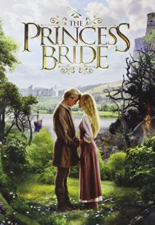

The Princess Bride
Get ready for a swashbuckling good time! Join Wesley, Indigo, Fezzik, and Buttercup in an adventure filled wih fencing, fighting, torture, revenge, giants, monsters, chases, escapes, true love, and miracles. Yes, this novel has something for everyone. A true case of the movie is just as good, if not better than the book. Did you know that Goldman makes a personal appearance in the novel and narrates the story? Compare and contrast the book and film. Let us know your thoughts in the comments below!
The most quotable film ever! Directed by Rob Reiner, The Princess Bride is a great film to watch on a rainy day. Watch spellbound as Wesley (Cary Elwes) fences with Indigo (Mandy Patinkin) on the Cliffs of Insanity. Smile when Fezzik (Andre the Giant) does something right. And cheer when Wesley and Buttercup (Robin Wright) are finally reunited. Have fun storming the castle!

Comments